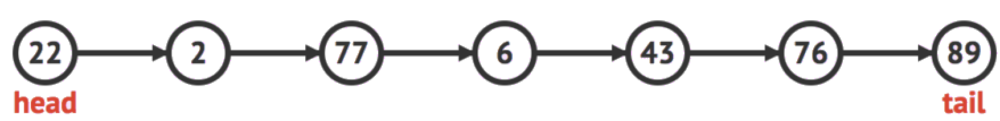
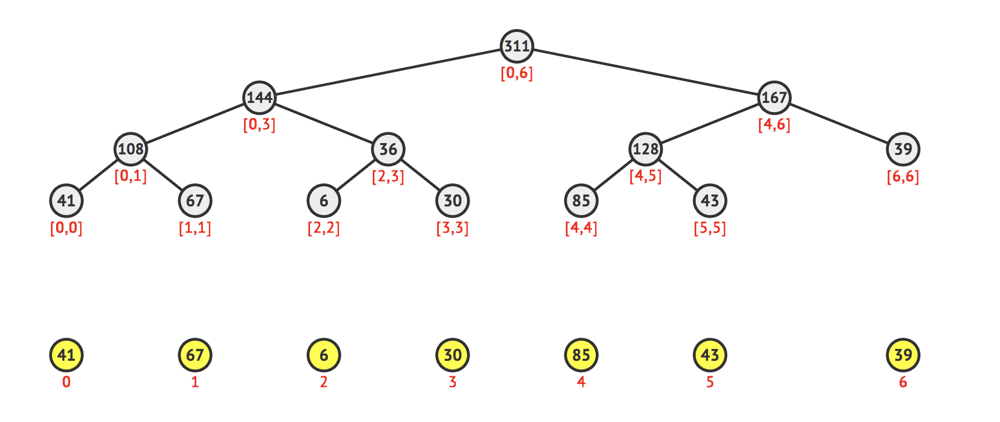
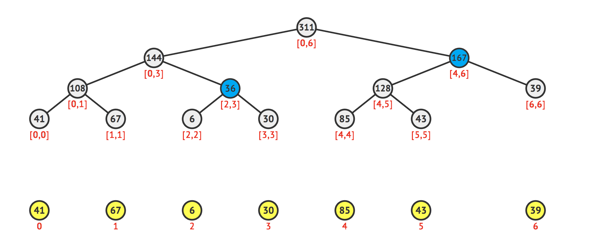
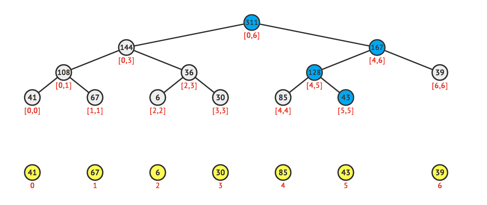

Data Structures - I
Editor: Tahsin Enes Kuru
Reviewers: Baha Eren Yaldız, Burak Buğrul
Contributors: Kerim Kochekov
Giriş¶
Bilgisayar biliminde veri yapıları, belirli bir eleman kümesi üzerinde verimli bir şeklide bilgi edinmemize aynı zamanda bu elemanlar üzerinde değişiklikler yapabilmemize olanak sağlayan yapılardır. Çalışma prensipleri genellikle elemanların değerlerini belirli bir kurala göre saklamak daha sonra bu yapıları kullanarak elemanlar hakkında sorulara (mesela, bir dizinin belirli bir aralığındaki en küçük sayıyı bulmak gibi) cevap aramaktır.
Dinamik Veri Yapıları¶
Linked List¶
Linked List veri yapısında elemanlar, her eleman kendi değerini ve bir sonraki elemanın adresini tutacak şekilde saklanır. Yapıdaki elemanlar baş elemandan (head) başlanarak son elemana (tail) gidecek şekilde gezilebilir. Diziye karşın avantajı hafızanın dinamik bir şekilde kullanılmasıdır. Bu veri yapısında uygulanabilecek işlemler:
- Veri yapısının sonuna eleman ekleme.
- Anlık veri yapısını baştan (head) sona (tail) gezme.

Stack¶
Stack veri yapısında elemanlar yapıya son giren ilk çıkar (LIFO) kuralına uygun olacak şekilde saklanır. Bu veri yapısında uygulayabildiğimiz işlemler:
- Veri yapısının en üstüne eleman ekleme.
- Veri yapısının en üstündeki elemana erişim.
- Veri yapısının en üstündeki elemanı silme.
- Veri yapısının boş olup olmadığının kontrölü.
C++ dilindeki STL kütüphanesinde bulunan hazır stack yapısının kullanımı aşağıdaki gibidir:
Queue¶
Queue veri yapısında elemanlar yapıya ilk giren ilk çıkar (FIFO) kuralına uygun olacak şekilde saklanır. Bu veri yapısında uygulayabildigimiz işlemler:
- Veri yapısının en üstüne eleman ekleme.
- Veri yapısının en altındaki elemanına erişim.
- Veri yapısının en altındaki elemanı silme.
- Veri yapısının boş olup olmadığının kontrölü.
C++ dilindeki STL kütüphanesinde bulunan hazır queue yapısının kullanımı aşağıdaki gibidir:
Deque¶
Deque veri yapısı stack ve queue veri yapılarına göre daha kapsamlıdır. Bu veri yapısında yapının en üstüne eleman eklenebilirken aynı zamanda en altına da eklenebilir. Aynı şekilde yapının hem en üstündeki elemanına hem de en alttaki elemanına erişim ve silme işlemleri uygulanabilir. Bu veri yapısında uyguluyabildiğimiz işlemler:
- Veri yapısının en üstüne eleman ekleme.
- Veri yapısının en altına eleman ekleme.
- Veri yapısının en üstündeki elemanına erişim.
- Veri yapısının en altındaki elemanına erişim.
- Veri yapısının en üstündeki elemanı silme.
- Veri yapısının en altındaki elemanı silme.
C++ dilindeki STL kütüphanesinde bulunan hazır deque yapısının kullanımı aşağıdaki gibidir:
P.S. deque veri yapısı stack ve queue veri yapılarına göre daha kapsamlı olduğundan ötürü stack ve queue veri yapılarına göre 2 kat fazla memory kullandığını açıklıkla söyleyebiliriz.
Prefix Sum¶
Prefix Sum dizisi bir dizinin prefixlerinin toplamlarıyla oluşturulan bir veri yapısıdır. Prefix sum dizisinin \(i\) indeksli elemanı girdi dizisindeki \(1\) indeksli elemandan \(i\) indeksli elemana kadar olan elemanların toplamına eşit olacak şekilde kurulur. Başka bir deyişle:
\[sum_i = \sum_{j=1}^{i} {a_j}\]
Örnek bir \(A\) dizisi için prefix sum dizisi şu şekilde kurulmalıdır:
| A Dizisi | \(4\) | \(6\) | \(3\) | \(12\) | \(1\) |
|---|---|---|---|---|---|
| Prefix Sum Dizisi | \(4\) | \(10\) | \(13\) | \(25\) | \(26\) |
| \(4\) | \(4+6\) | \(4+6+3\) | \(4+6+3+12\) | \(4+6+3+12+1\) |
Prefix sum dizisini kullanarak herhangi bir \([l,r]\) aralığındaki elemanların toplamını şu şekilde kolaylıkla elde edebiliriz:
\[sum_r = \sum_{j=1}^{r} {a_j}\]
\[sum_{l - 1} = \sum_{j=1}^{l - 1} {a_j}\]
\[sum_r - sum_{l-1} = \sum_{j=l}^{r} {a_j}\]
Örnek Kod Parçaları¶
Prefix Sum dizisini kurarken \(sum_i = sum_{i - 1} + a_i\) eşitliği kolayca görülebilir ve bu eşitliği kullanarak \(sum[]\) dizisini girdi dizisindeki elemanları sırayla gezerek kurabiliriz:
Zaman Karmaşıklığı¶
Prefix sum dizisini kurma işlemimizin zaman ve hafıza karmaşıklığı \(\mathcal{O}(N)\). Her sorguya da \(\mathcal{O}(1)\) karmaşıklıkta cevap verebiliyoruz.
Prefix sum veri yapısı ile ilgili örnek bir probleme buradan ulaşabilirsiniz.
Sparse Table¶
Sparse table aralıklardaki elemanların toplamı, minimumu, maksimumu ve EBOB'ları gibi sorgulara \(\mathcal{O}(\log N)\) zaman karmaşıklığında cevap alabilmemizi sağlayan bir veri yapısıdır. Bazı tip sorgular (aralıktaki minimum, maksimum sayıyı bulma gibi) ise \(\mathcal{O}(1)\) zaman karmaşıklığında yapmaya uygundur.
Bu veri yapısı durumu değişmeyen, sabit bir veri üzerinde ön işlemler yaparak kurulur. Dinamik veriler için kullanışlı değildir. Veri üzerinde herhangi bir değişiklik durumda Sparse table tekrardan kurulmalıdır. Bu da maliyetli bir durumdur.
Yapısı ve Kuruluşu¶
Sparse table iki bouyutlu bir dizi şeklinde, \(\mathcal{O}(N\log N)\) hafıza karmaşıklığına sahip bir veri yapısıdır. Dizinin her elemanından \(2\)'nin kuvvetleri uzaklıktaki elemanlara kadar olan cevaplar Sparse table'da saklanır. \(ST_{x,i}\), \(x\) indeksli elemandan \(x + 2^i - 1\) indeksli elemana kadar olan aralığın cevabını saklayacak şekilde sparse table kurulur.
Sorgu Algoritması¶
Herhangi bir \([l,r]\) aralığı için sorgu algoritması sırasıyla şu şekilde çalışır:
- \([l,r]\) aralığını cevaplarını önceden hesapladığımız aralıklara parçala.
- Sadece \(2\)'nin kuvveti uzunluğunda parçaların cevaplarını sakladığımız için aralığımızı \(2\)'nin kuvveti uzunluğunda aralıklara ayırmalıyız. \([l,r]\) aralığının uzunluğunun ikilik tabanda yazdığımızda hangi aralıklara parçalamamız gerektiğini bulmuş oluruz.
- Bu aralıklardan gelen cevapları birleştirerek \([l,r]\) aralığının cevabını hesapla.
Herhangi bir aralığın uzunluğunun ikilik tabandaki yazılışındaki \(1\) rakamlarının sayısı en fazla \(\log(N)\) olabileceğinden parçalayacağımız aralık sayısı da en fazla \(\log(N)\) olur. Dolayısıyla sorgu işlemimiz \(\mathcal{O}(\log N)\) zaman karmaşıklığında çalışır.
Örneğin: \([4,17]\) aralığının cevabını hesaplamak için algoritmamız \([4,17]\) aralığını \([4,11]\), \([12,15]\) ve \([16,17]\) aralıklarına ayırır ve bu \(3\) aralıktan gelen cevapları birleştirerek istenilen cevabı hesaplar.
Minimum ve Maksimum Sorgu¶
Sparse Table veri yapısının diğer veri yapılarından farklı olarak \(\mathcal{O}(1)\) zaman karmaşıklığında aralıklarda minimum veya maksimum sorgusu yapabilmesi en avantajlı özelliğidir.
Herhangi bir aralığın cevabını hesaplarken bu aralıktaki herhangi bir elemanı birden fazla kez değerlendirmemiz cevabı etkilemez. Bu durum aralığımızı \(2\)'nin kuvveti uzunluğunda maksimum \(2\) adet aralığa bölebilmemize ve bu aralıkların cevaplarını \(\mathcal{O}(1)\) zaman karmaşıklığında birleştirebilmemize olanak sağlar.
Sparse Table veri yapısı ile ilgili örnek bir probleme buradan ulaşabilirsiniz.
Binary Indexed Tree¶
Fenwick Tree olarak da bilinen Binary Indexed Tree, Prefix Sum ve Sparse Table yapılarına benzer bir yapıda olup dizi üzerinde değişiklik yapabilmemize olanak sağlayan bir veri yapısıdır. Fenwick Tree'nin diğer veri yapılarına göre en büyük avantajı pratikte daha hızlı olması ve hafıza karmaşıklığının \(\mathcal{O}(N)\) olmasıdır. Ancak Fenwick Tree'de sadece prefix cevapları (veya suffix cevapları) saklayabildiğimizden aralıklarda minimum, maksimum ve EBOB gibi bazı sorguların cevaplarını elde edemeyiz.
Yapısı ve Kuruluşu¶
\(g(x)\), \(x\) sayısının bit gösteriminde yalnızca en sağdaki bitin 1 olduğu tam sayı olsun. Örneğin \(20\)'nin bit gösterimi \((10100)_2\) olduğundan \(g(20)=4\)'tür. Çünkü ilk kez sağdan \(3.\) bit \(1\)'dir ve \((00100)_2=4\)'tür. Fenwick Tree'nin \(x\) indeksli düğümünde, \(x - g(x) + 1\) indeksli elemandan \(x\) indeksli elemana kadar olan aralığın cevabını saklayacak şekilde kurulur.

Sorgu Algoritması¶
Herhangi bir \([1,x]\) aralığı için sorgu algoritması sırası ile şu şeklide çalışır:
- Aradığımız cevaba \([x - g(x) + 1,x]\) aralığının cevabını ekle.
- \(x\)'in değerini \(x - g(x)\) yap. Eğer \(x\)'in yeni değeri \(0\)'dan büyük ise \(1.\) işlemden hesaplamaya devam et.
\([1,x]\) aralığının cevabını hesaplamak için yapılan işlem sayısı \(x\) sayısının \(2\)'lik tabandaki yazılışındaki \(1\) sayısına eşittir. Çünkü her döngüde \(x\)'ten \(2\)'lik tabandaki yazılışındaki en sağdaki \(1\) bitini çıkartıyoruz. Dolayısıyla sorgu işlemimiz \(\mathcal{O}(\log N)\) zaman karmaşıklığında çalışır. \([l,r]\) aralığının cevabını da \([1,r]\) aralığının cevabından \([1,l - 1]\) aralığının cevabını çıkararak kolay bir şekilde elde edebiliriz.
NOT: \(g(x)\) değerini bitwise operatörlerini kullanarak aşağıdaki eşitlikle kolay bir şekilde hesaplayabiliriz: \[g(x) = x \ \& \ (-x)\]
Eleman Güncelleme Algoritması¶
Dizideki \(x\) indeksli elemanının değerini güncellemek için kullanılan algoritma şu şeklide çalışır:
- Ağaçta \(x\) indeksli elemanı içeren tüm düğümlerin değerlerini güncelle.
Fenwick Tree'de \(x\) indeksli elemanı içeren maksimum \(\log(N)\) tane aralık olduğundan güncelleme algoritması \(\mathcal{O}(\log N)\) zaman karmaşıklığında çalışır.
Örnek Kod Parçaları¶
Fenwick Tree veri yapısı ile ilgili örnek bir probleme buradan ulaşabilirsiniz.
Aralık Güncelleme ve Eleman Sorgu¶
Bir \(a\) dizisi üzerinde işlemler yapacağımızı varsayalım daha sonra \(a\) dizisi \(b\) dizisinin prefix sum dizisi olacak şekilde bir \(b\) dizisi tanımlayalım. Başka bir deyişle $a_i = \displaystyle\sum_{j=1}^{i} {b_j} $ olmalıdır. Sonradan oluşturduğumuz \(b\) dizisi üzerine Fenwick Tree yapısını kuralım. \([l,r]\) aralığındaki her elemana \(x\) değerini eklememiz için uygulamamız gereken işlemler:
- \(b_l\) değerini \(x\) kadar artır. Böylelikle \(l\) indeksli elemandan dizinin sonuna kadar tüm elemanların değeri \(x\) kadar artmış olur.
- \(b_{r + 1}\) değerini \(x\) kadar azalt. Böylelikle \(r + 1\) indeksli elemandan dizinin sonuna kadar tüm elemanların değeri \(x\) kadar azalmış olur. Bu işlemelerin sonucunda sadece \([l,r]\) aralığındaki elemanların değeri \(x\) kadar artmış olur.
Örnek Kod Parçaları¶
SQRT Decomposition¶
Square Root Decomposition algoritması dizi üzerinde \(\mathcal{O}(\sqrt{N})\) zaman karmaşıklığında sorgu yapabilmemize ve \(\mathcal{O}(1)\) zaman karmaşıklığında ise değişiklik yapabilmemize olanak sağlayan bir veri yapsıdır.
Yapısı ve Kuruluşu¶
Dizinin elemanları her biri yaklaşık \(\mathcal{O}(\sqrt{N})\) uzunluğunda bloklar halinde parçalanır. Her bir blokun cevabı ayrı ayrı hesaplanır ve bir dizide saklanır.
| Blokların Cevapları | \(21\) | \(13\) | \(50\) | \(32\) | ||||||||||||
|---|---|---|---|---|---|---|---|---|---|---|---|---|---|---|---|---|
| Dizideki Elemanlar | \(3\) | \(6\) | \(2\) | \(10\) | \(3\) | \(1\) | \(4\) | \(5\) | \(2\) | \(7\) | \(37\) | \(4\) | \(11\) | \(6\) | \(8\) | \(7\) |
| Elemanların İndeksleri | \(1\) | \(2\) | \(3\) | \(4\) | \(5\) | \(6\) | \(7\) | \(8\) | \(9\) | \(10\) | \(11\) | \(12\) | \(13\) | \(14\) | \(15\) | \(16\) |
Sorgu Algoritması¶
Herhangi bir \([l,r]\) aralığı için sorgu algoritması sırası ile şu şekilde çalışır:
- Cevabını aradığımız aralığın tamamen kapladığı blokların cevabını cevabımıza ekliyoruz.
- Tamamen kaplamadığı bloklardaki aralığımızın içinde olan elemanları tek tek gezerek cevabımıza ekliyoruz.
Cevabını aradığımız aralığın kapsadığı blok sayısı en fazla \(\sqrt{N}\) olabileceğinden \(1.\) işlem en fazla \(\sqrt{N}\) kez çalışır. Tamamen kaplamadığı ancak bazı elemanları içeren en fazla \(2\) adet blok olabilir. (Biri en solda diğeri en sağda olacak şekilde.) Bu \(2\) blok için de gezmemiz gereken eleman sayısı maksimum \(2\sqrt{N}\) olduğundan bir sorgu işleminde en fazla \(3\sqrt{N}\) işlem yapılır, dolayısıyla sorgu işlemimiz \(\mathcal{O}(\sqrt{N})\) zaman karmaşıklığında calışır.
| Blokların Cevapları | \(21\) | \(13\) | \(50\) | \(32\) | ||||||||||||
|---|---|---|---|---|---|---|---|---|---|---|---|---|---|---|---|---|
| Dizideki Elemanlar | \(3\) | \(6\) | \(2\) | \(10\) | \(3\) | \(1\) | \(4\) | \(5\) | \(2\) | \(7\) | \(37\) | \(4\) | \(11\) | \(6\) | \(8\) | \(7\) |
| Elemanların İndeksleri | \(1\) | \(2\) | \(3\) | \(4\) | \(5\) | \(6\) | \(7\) | \(8\) | \(9\) | \(10\) | \(11\) | \(12\) | \(13\) | \(14\) | \(15\) | \(16\) |
Eleman Güncelleme Algoritması¶
Herhangi bir elemanın değerini güncellerken o elemanı içeren blokun değerini güncellememiz yeterli olacaktır. Dolayısıyla güncelleme işlemimimiz \(\mathcal{O}(1)\) zaman karmaşıklığında çalışır.
SQRT Decomposition veri yapısı ile ilgili örnek bir probleme buradan ulaşabilirsiniz.
Segment Tree¶
Segment Tree bir dizide \(\mathcal{O}(\log N)\) zaman karmaşıklığında herhangi bir \([l,r]\) aralığı icin minimum, maksimum, toplam gibi sorgulara cevap verebilmemize ve bu aralıklar üzerinde güncelleme yapabilmemize olanak sağlayan bir veri yapısıdır.
Segment Tree, Fenwick Tree ve Sparse Table yapılarından farklı olarak elemanlar üzerinde güncelleme yapılabilmesi ve minimum, maksimum gibi sorgulara da olanak sağlaması yönünden daha kullanışlıdır. Ayrıca Segment Tree \(\mathcal{O}(N)\) hafıza karmaşıklığına sahipken Sparse Table yapısında gereken hafıza karmaşıklığı \(\mathcal{O}(N \log N)\)'dir.
Yapısı ve Kuruluşu¶
Segment Tree, "Complete Binary Tree" yapısına sahiptir. Segment Tree'nin yaprak düğümlerinde dizinin elemanları saklıdır ve bu düğümlerin atası olan her düğüm kendi çocuğu olan düğümlerinin cevaplarının birleşmesiyle oluşur. Bu sayede her düğümde belirli aralıkların cevapları ve root düğümünde tüm dizinin cevabı saklanır. Örneğin toplam sorgusu için kurulmuş bir Segment Tree yapısı için her düğümün değeri çocuklarının değerleri toplamına eşittir.

Aralık Sorgu ve Eleman Güncelleme¶
Sorgu Algoritması¶
Herhangi bir \([l,r]\) aralığı için sorgu algoritması sırası ile şu şekilde çalışır: - \([l,r]\) aralığını ağacımızda cevapları saklı olan en geniş aralıklara parçala. - Bu aralıkların cevaplarını birleştirerek istenilen cevabı hesapla.
Ağacın her derinliğinde cevabımız için gerekli aralıklardan maksimum \(2\) adet bulunabilir. Bu yüzden sorgu algoritması \(\mathcal{O}(\log N)\) zaman karmaşıklığında çalışır.

\(a = [41,67,6,30,85,43,39]\) dizisinde \([2,6]\) aralığının cevabı \([2,3]\) ile \([4,6]\) aralıklarının cevaplarının birleşmesiyle elde edilir. Toplam sorgusu için cevap \(36+167=203\) şeklinde hesaplanır.
Eleman Güncelleme Algoritması¶
Dizideki \(x\) indeksli elemanının değerini güncellemek için kullanılan algoritma şu şeklide çalışır:
- Ağaçta \(x\) indeksli elemanı içeren tüm düğümlerin değerlerini güncelle.
Ağaçta \(x\) indeksli elemanın cevabını tutan yaprak düğümden root düğüme kadar toplamda \(\log(N)\) düğümün değerini güncellememiz yeterlidir. Dolayısıyla herhangi bir elemanın değerini güncellemenin zaman karmaşıklığı \(\mathcal{O}(\log N)\)'dir.

Segment Tree veri yapısı ile ilgili örnek bir probleme buradan ulaşabilirsiniz.
Örnek Problemler¶
Veri yapıları üzerinde pratik yapabilmeniz için önerilen problemler:
Faydalı Bağlantılar¶
- https://en.wikipedia.org/wiki/Data_structure
- https://cp-algorithms.com/data_structures/sparse-table.html
- https://cp-algorithms.com/data_structures/segment_tree.html
- https://cp-algorithms.com/data_structures/fenwick.html
- https://cp-algorithms.com/data_structures/sqrt_decomposition.html
- https://cses.fi/book/book.pdf
- https://visualgo.net/en/segmenttree
- https://visualgo.net/en/fenwicktree
- https://www.geeksforgeeks.org/binary-indexed-tree-or-fenwick-tree-2
- http://www.cs.ukzn.ac.za/~hughm/ds/slides/20-stacks-queues-deques.pdf
- https://www.geeksforgeeks.org/stack-data-structure
- https://www.geeksforgeeks.org/queue-data-structure
- https://www.geeksforgeeks.org/deque-set-1-introduction-applications
- https://www.geeksforgeeks.org/linked-list-set-1-introduction
- https://www.geeksforgeeks.org/binary-indexed-tree-range-updates-point-queries
- https://visualgo.net/en/list
- https://cp-algorithms.com/data_structures/fenwick.html